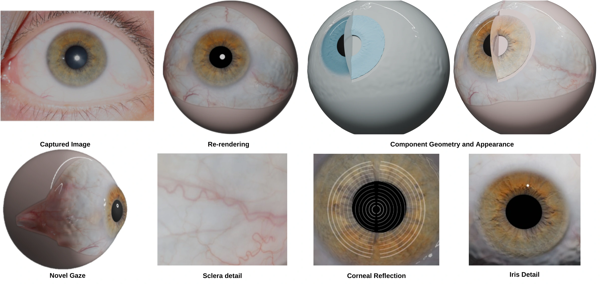

Abstract
Reflection and refraction couple the appearance of the sclera, cornea, and iris in photographs, making fine eye geometry difficult to recover. We present an eye capture system that uses optical measurements tailored to each component. Multi-view, multi-gaze images constrain the scleral shape, specular reflections constrain the corneal surface, and the estimated cornea enables refraction-aware recovery of iris microgeometry.
Across subjects, the reconstructions reveal scleral asymmetry, non-axisymmetric corneal shape, iris relief, and pupil-center motion. The resulting assets support novel-gaze rendering and are available for research through the DetailedEyes@CAS dataset.
Method
Sclera
Multi-view, multi-gaze imaging recovers subject-specific scleral geometry and establishes an eye-centered coordinate frame.
Cornea
Specular highlights and dense Placido-ring measurements estimate the anterior corneal surface.
Iris
Photometric reconstruction uses the estimated cornea to account for refraction and recover iris albedo, normals, and fine displacement.
Video
DetailedEyes@CAS Dataset
The dataset contains 20 reconstructed eyes from 10 participants, with component meshes, textures, and five model-generated iris states per eye.
For dataset access, please contact Shihong Xia at xsh@ict.ac.cn.

BibTeX
@article{zhang2026capturing,
author = {Zhang, Zhiheng and Yang, Shuang and Xia, Shihong},
title = {Capturing Rich Details of Human Eyes},
journal = {ACM Transactions on Graphics},
year = {2026},
volume = {45},
number = {6},
articleno = {203},
doi = {10.1145/3842575},
url = {https://doi.org/10.1145/3842575}
}